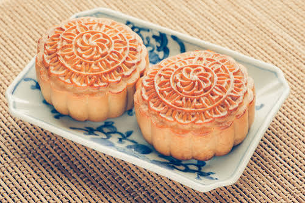

เทศกาลไหว้พระจันทร์

เทศกาลไหว้พระจันทร์ หรือ เทศกาลกลางฤดูใบไม้ร่วง (Mid-Autumn Festival) คือ เทศกาลตามวัฒนธรรมจีนที่มีขึ้นเพื่อเฉลิมฉลองการเก็บเกี่ยวและแสดงความขอบคุณต่อเทพเจ้า โดยจะจัดขึ้นใน คืนวันเพ็ญเดือน 8 ตามปฏิทินจันทรคติจีน ซึ่งมักจะตรงกับช่วงเดือนกันยายนหรือตุลาคมของทุกปีในค่ำคืนนี้ ครอบครัวชาวจีนจะมารวมตัวกันเพื่อกราบไหว้ดวงจันทร์ ชมความงามของพระจันทร์เต็มดวง และรับประทาน ขนมไหว้พระจันทร์ ซึ่งเป็นขนมทรงกลมคล้ายเค้กสอดไส้ต่าง ๆ (เช่น ทุเรียน โหงวยิ้ง หรือไข่เค็ม) ร่วมกัน โดยรูปทรงกลมของขนมและดวงจันทร์นั้นเป็นสัญลักษณ์ที่สื่อถึงความกลมเกลียว ความสมบูรณ์ และการพร้อมหน้าพร้อมตาของคนในครอบครัว นอกจากนี้ในหลายพื้นที่ยังนิยมประดับโคมไฟสีแดงและจัดกิจกรรมรื่นเริงเพื่อเฉลิมฉลองอีกด้วย